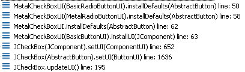
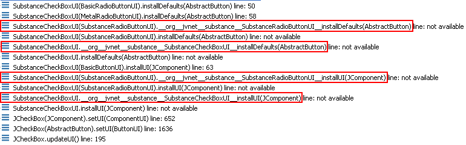
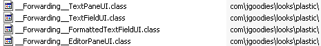

How it works
Delegate augmentation
If you need to debug a look-and-feel that has been augmented
automatically, you need to be aware of the naming convention of the augmented code. The
delegate augmentation takes an existing look-and-feel UI delegate class and changes
it in the following way:
- If the class has lafWidgets member (no matter of which type), the
augmentation is cancelled and the class remains intact.
- A new member is added to the class. The member definition is protected Set lafWidgets.
This set will be populated at runtime (in the installUI method) with the relevant
widgets.
- Each overriding install / uninstall method (at most eight) is renamed (the logic
inside the original method is preserved). The naming convention prepends the fully-qualified
class name to the method name (this is to prevent name collisions for inner-LAF extending UI delegates
- see example below). The slashes in the class name are replaced by double underscores. The prefix
starts with double underscores as well - see example below.
- For each non-overriding install / uninstall method (defined in one of the base
LAF classes but not overriden in the specific UI delegate), a new forwarding method is created. The
method name follows the convention above. The method implementation contains a single call
to the super implementation.
- For every install / uninstall method (overriding or not), a new implementation is created.
The implementation calls the previously created method (either renamed original implementation or
newly created forwarding implementation). Afterwards, the implementation calls the relevant
widget lifecycle function.
Here is an example that illustrates the above. Suppose we have a custom UI delegate
for tabbed panes which looks like (relevant install / uninstall methods only):
public class CustomTabbedPaneUI extends MetalTabbedPaneUI {
public void installUI(JComponent c) {
super.installUI(c);
// do something
}
protected void installListeners() {
super.installListeners();
// do something
}
}
After augmenting this UI delegate, the bytecode will contain the following implementation
(not that the complete implementation will contain all install / uninstall methods):
public class CustomTabbedPaneUI extends MetalTabbedPaneUI {
protected Set lafWidgets;
// This method is renamed (preserving original implementation)
public void __org__jvnet__lafwidget__ant__temp__installUI(JComponent c) {
super.installUI(c);
// do something
}
// This method is renamed (preserving original implementation)
protected void __org__jvnet__lafwidget__ant__temp__installListeners() {
super.installListeners();
// do something
}
// This method is created automatically (forwarding implementation)
protected void __org__jvnet__lafwidget__ant__temp__installComponents() {
super.installComponents();
}
public void installUI(JComponent c) {
this.lafWidgets = LafWidgetRepository.getRepository()
.getMatchingWidgets(c);
this.__org__jvnet__lafwidget__ant__temp__installUI(c);
for (Iterator it = this.lafWidgets.iterator(); it.hasNext();) {
LafWidget lw = (LafWidget) it.next();
lw.installUI();
}
}
protected void installListeners() {
this.__org__jvnet__lafwidget__ant__temp__installListeners();
for (Iterator it = this.lafWidgets.iterator(); it.hasNext();) {
LafWidget lw = (LafWidget) it.next();
lw.installListeners();
}
}
protected void installComponents() {
this.__org__jvnet__lafwidget__ant__temp__installComponents();
for (Iterator it = this.lafWidgets.iterator(); it.hasNext();) {
LafWidget lw = (LafWidget) it.next();
lw.installComponents();
}
}
}
As can be seen, the following changes have been made:
- lafWidgets field added.
- Existing methods renamed with the logic preserved (see __org__jvnet__lafwidget__ant__temp__installUI
and __org__jvnet__lafwidget__ant__temp__installListeners).
- Non-overriden methods - created forwarding delegates (see __org__jvnet__lafwidget__ant__temp__installComponents
method).
- Implementation of install / uninstall methods calls either original
implementation (see installUI and installListeners) or the generated
forwarding implementation (see installListeners). In addition, corresponding
lifecycle methods of registered widgets are invoked.
- Implementation of installUI queries the LafWidgetRepository
for all available widgets that match the component and initializes the lafWidgets
set.
Here is the original stack trace of sample application under Metal look-and-feel:

As can be seen, the call to installUI executes code in BasicButtonUI
(since MetalCheckBoxUI doesn't override this method). This function
calls the installDefaults (which is overriden in MetalCheckBoxUI)
that gets to MetalCheckBoxUI
which calls the super implementation in MetalRadioButtonUI
and so on. The matching stack trace in the augmented code (Substance):

In the augmented code, we have forwarding implementation of installUI in the
SubstanceCheckBoxUI which is called after we get the associated widgets. The
execution eventually gets to the original implementation in the BasicButtonUI
and goes from there back to installDefaults of SubstanceCheckBoxUI which
calls the generated forwarding implementation as well. Eventually, we get to the original
method in MetalRadioButtonUI.
This stack trace illustrates the need for the prefix of generated methods. Without this
perfix we would have stack overflow since SubstanceCheckBoxUI extends
SubstanceRadioButtonUI.
LAF augmentation
The LAF augmentation follows the same principle. The main LAF class undergoes the
following changes:
- The original initClassDefaults method is renamed.
- New initClassDefaults method is created. The implementation calls
the original (renamed) method and then puts additional pairs into the UIDefaults
table. Each pair contains a "missing" (unimplemented) component UI ID and the
class name of a generated UI delegate.
In addition, this process generates component UI delegates that contain implementations
of createUI and forwarding constructor (w/o arguments or with single argument
according to the core UI delegate). These delegates should then undergo the delegate
augmentation as described above. The naming convention for the generated delegates is
__Forwarding__ plus the component UI ID. The generated delegates are put under the same
package as the main look-and-feel class:

Finding widgets at runtime
The LafWidgetRepository employs flexible mechanism for the runtime lookup and
instantiation of widgets. The information on available widgets is searched in
META-INF/lafwidget.properties resources in the classpath. This means that you can
put additional (third-party or your own) widgets in the classpath (as jars or simple
classes) and they will be picked at runtime.
The base edition of this project comes with the following lafwidget.properties:
org.jvnet.lafwidget.combo.ComboboxAutoCompletionWidget = javax.swing.JComboBox
org.jvnet.lafwidget.desktop.DesktopIconHoverPreviewWidget = javax.swing.JInternalFrame$JDesktopIcon
org.jvnet.lafwidget.menu.MenuSearchWidget = javax.swing.JMenuBar
org.jvnet.lafwidget.tabbed.TabHoverPreviewWidget = javax.swing.JTabbedPane
org.jvnet.lafwidget.tabbed.TabOverviewDialogWidget = javax.swing.JTabbedPane
org.jvnet.lafwidget.tabbed.TabPagerWidget = javax.swing.JTabbedPane
org.jvnet.lafwidget.text.PasswordStrengthCheckerWidget = javax.swing.JPasswordField
org.jvnet.lafwidget.text.LockBorderWidget = javax.swing.text.JTextComponent;javax.swing.JComboBox
org.jvnet.lafwidget.text.SelectAllOnFocusGainWidget = javax.swing.text.JTextComponent
org.jvnet.lafwidget.text.EditContextMenuWidget = javax.swing.text.JTextComponent
org.jvnet.lafwidget.tree.dnd.TreeDragAndDropWidget = javax.swing.JTree
The format of this file is very simple - each line contains the key and the value.
The key should be the fully qualified class name of a widget. If no such class is found,
the class doesn't implement LafWidget interface or doesn't have default constructor,
the matching entry will be ignored. The value is semicolon-separated list of fully-qualified
class names of components that can be "decorated" with the relevant widget.
At runtime, the implementation of LafWidgetRepository.getMatchingWidgets
searches the entire hierarchy of the specified component and instantiates all widgets
that match either the component class or one of its super classes. In addition, it
doesn't instantiate widgets that return false from
requiresCustomLafSupport when there is not custom LAF support set.
This implementation allows safely removing any (or all) widgets from the final
archive of a specific look-and-feel that uses this library. For example, if you
(as a look-and-feel developer) decide to not use the tabbed pane widgets, you can
safely remove all classes from org.jvnet.lafwidget.tabbed package (without
changing the lafwidget.properties). This means that you can effectively
use the widgets as building blocks to build your own "feel" part of the application.